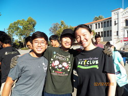
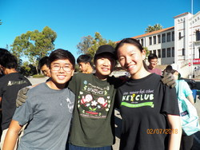
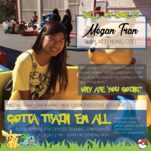
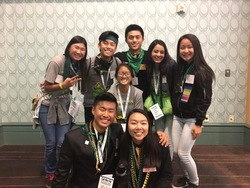
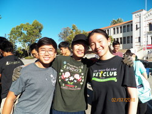
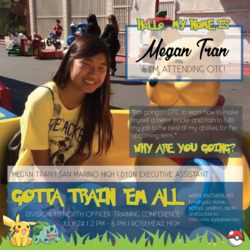
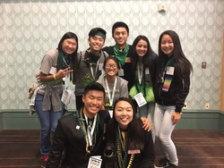

Megan Tran
While I am a freshman at UCR, I have held many cabinet positions within my high school Key Club. My time as the Key Club President has refined my managing and organization skills. As the Key Club President, I delegated and upheld strong communication with officers to organize, promote, and supervise 15+ service and club events in order to prevent past lack of coordinated events of 5+. I was also the first Key Club President of Division to invent stamp card system – members receive a stamp for every event attended and receive new stamp card and raffle ticket after stamp card is filled for possible prizes – in order to increase membership participation in club meetings and service events; club participation and membership increased by over 50% from last year.
Furthermore, my time as an event coordinator required that I be able to research information to coordinate events and that I am adequate at marketing said events using the means of social media or posters. I also held the position of Executive Assistant for two years and my duties within this position including: finding, communicating, and working with outside organization event coordinators to reserve community service opportunities for division members to participate in by making and receiving calls/emails to organize specific times and places of events in order to meet minimum goal of two service events a month.
I currently hold the position of Co-Chair of the Outreach Committee for the Future Business Leaders of America Club. As a committee chair, my job involves ensuring that communication between the club committees and board is maintained as well as planning and leading weekly meetings with the Outreach committee in order to plan professional development events for the FBLA members. As a part of the Outreach Committee, it is also my responsibility to commit at least two hours of tabling every Wednesday; tabling is the activity of advertising the FBLA club's vision to other students on campus in hopes of convincing more people to join the FBLA club to grow in both a professional and personal manner.
Besides extracurricular activities, my academic goal is to concentrate in Accounting to earn my CPA and go on to graduate school to earn my MBA degree. I am a very academically driven individual and I hope that furthering my academic career and achieving my academic goals will help aid my career goals in the future. My hope is to one day find an occupation within some form of the entertainment industry and become a Chief Financial Officer. Becoming a Chief Executive Officer is also a big dream of mine that I hope to achieve one day.
Experience
Club President
• Delegated and upheld strong communication with officers to organize, promote, and supervise 15+ service and club events in order to prevent past lack of coordinated events of 5+
• First Key Club President of Division to invent stamp card system – members receive a stamp for every event attended and receive new stamp card and raffle ticket after stamp card is filled for possible prizes – in order to increase membership participation in club meetings and service events; club participation and membership increased by over 50% from last year
• Maintained proper communication with club and school supervisors to assure club remained in good standing with the school and Kiwanis (assistant organization) to prevent club from disbanding and reveiving penalties
Executive Assistant
• Found, communicated, and worked with outside organization event coordinators to reserve community service opportunities for division members to participate in by making and receiving calls/emails to organize specific times and places of events in order to meet minimum goal of two service events a month
• Kept record of all events and members who attended in order to make club and division secretaries’ jobs easier – was not required
• Coordinated with division officers to plan 10+ partner events with other school Key Clubs within the division to strengethn the bonds between club members across different schools
Intern
• Organized and participated in 10+ food drive events aimed towards bettering the living standards of the homeless within the community
• Worked under Board of Director, Treasurer & Fundraising Vice President and contributed to decision-making processes of future organization activities concerning fundraising and money management in order to develop professional leadership and networking skills
• Participated in Project Management Guide event and created an entire ten-page guide on school supplies project to be considered by the Pasadena Jaycees board for execution in future years in order to not only potentially provide low-income students the chance to receive proper schooling equipment but to also develop project-managing skills
Education
University of California Riverside
Portfolio
 




 